Next: alignment.malign() align Up: The alignment class: comparison Previous: alignment.align() align Contents Index
IMPORTANT NOTE: This command is obsolete, and is no longer maintained. It is strongly recommended that you use alignment.salign() instead.
This command aligns a block of sequences (second block) with a block of structures (first block). It is the same as the alignment.align() command except that a variable gap opening penalty is used. This gap penalty depends on the 3D structure of all sequences in block 1. The variable gap penalty can favor gaps in exposed regions, avoid gaps within secondary structure elements, favor gaps in curved parts of the mainchain, and minimize the distance between the two Cα positions spanning a gap. The alignment.align2d() command is preferred for aligning a sequence with structure(s) in comparative modeling because it tends to place gaps in a better structural context. See Section A.1.2 for the dynamic programming algorithm that implements the variable gap penalty. gap_penalties_2d specifies parameters 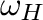, 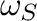, 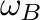, 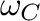, 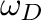,,
, 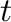 and 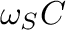. (Section A.1.2). The default gap penalties gap_penalties_1d and gap_penalties_2d as well as the rr_file substitution matrix were found to be optimal in pairwise alignments of structures and sequences sharing from 30% to 45% sequence identity [Madhusudhan et al., 2006].
The linear gap penalty function for inserting a gap in block 1 of structures is: 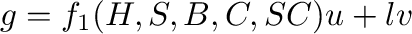 where 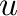 andare the usual gap opening and extension penalties,
is gap length, and
is a function that is at least 1, but can be larger to make gap opening more difficult in the following circumstances: between two consecutive (i.e., 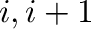) helical positions, two consecutive β-strand positions, two consecutive buried positions, or two consecutive positions where the mainchain is locally straight. This function is 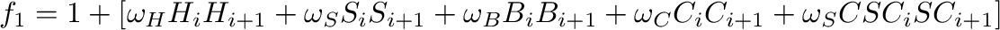, 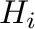 is the fraction of helical residues at position
in block 1, 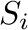 is the fraction of β-strand residues at position
The linear gap penalty function for opening a gap in block 2 of sequences is: 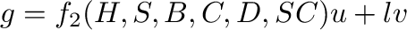 where 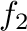 is a function that is at least 1, but can be larger to make the gap opening in block 2 more difficult in the following circumstances: when the first gap position is aligned with a helical residue, a β-strand residue, a buried residue, extended mainchain, or when the whole gap in block 2 is spanned by two residues in block 1 that are far apart in space. This function is 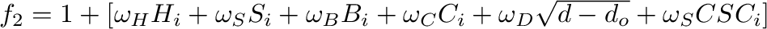. 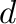 is the distance between the two Cα atoms spanning the gap, averaged over all structures in block 1 and
To find the best alignment, this method backtracks through the dynamic programming matrix, effectively adding gaps up to max_gap_length. Thus, for optimum performance you may want to reduce this parameter from its default value.
Other parameters are described in alignment.align().
When fit is False, no alignment is done and the routine returns only the average structural information, which can be written out by the alignment.write() command.
# Demonstrating ALIGN2D, aligning with variable gap penalty from modeller import * log.verbose() env = environ() env.libs.topology.read('$(LIB)/top_heav.lib') env.io.atom_files_directory = ['../atom_files'] # Read aligned structure(s): aln = alignment(env) aln.append(file='toxin.ali', align_codes='2ctx') aln_block = len(aln) # Read aligned sequence(s): aln.append(file='toxin.ali', align_codes='2nbt') # Structure sensitive variable gap penalty sequence-sequence alignment: aln.align2d(overhang=0, gap_penalties_1d=(-100, 0), gap_penalties_2d=(3.5, 3.5, 3.5, 0.2, 4.0, 6.5, 2.0, 0., 0.), align_block=aln_block) aln.write(file='align2d.ali', alignment_format='PIR') aln.write(file='align2d.pap', alignment_format='PAP', alignment_features='INDICES HELIX BETA STRAIGHTNESS ' + \ 'ACCESSIBILITY CONSERVATION') aln.check() # Color the first template structure according to gaps in alignment: aln = alignment(env) aln.append(file='align2d.ali', align_codes=('2ctx', '2nbt'), alignment_format='PIR', remove_gaps=True) mdl = model(env) mdl.read(file=aln['2ctx'].atom_file, model_segment=aln['2ctx'].range) mdl.color(aln=aln) mdl.write(file='2ctx.aln.pdb') # Color the first template structure according to secondary structure: mdl.write_data(file='2ctx', output='SSM') mdl.write(file='2ctx.ssm.pdb') # Superpose the target structure onto the first template: mdl2 = model(env) mdl2.read(file=aln['2nbt'].atom_file, model_segment=aln['2nbt'].range) sel = selection(mdl).only_atom_types('CA') sel.superpose(mdl2, aln) mdl2.write(file='2nbt.fit.pdb')